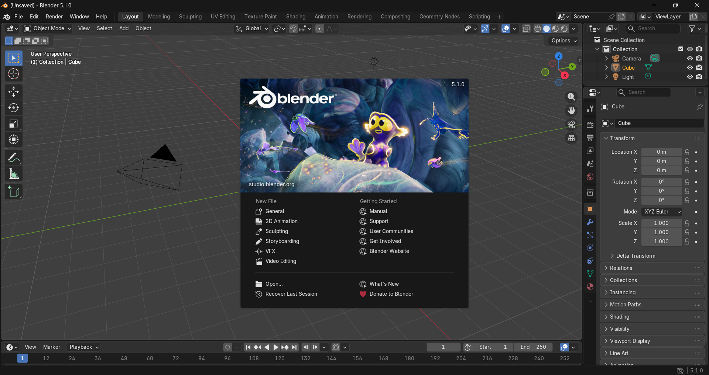

Genshoe là addon giúp tăng tốc workflow modeling trong Blender với các công cụ mạnh mẽ và dễ sử dụng.
Genshoe là một add-on dành cho Blender giúp tối ưu quy trình thiết kế giày dép 3D. Công cụ này cung cấp nhiều tiện ích chuyên biệt cho ngành footwear như xử lý mesh, tạo đường may, chỉnh sửa UV và các thao tác modeling thường dùng khi thiết kế giày.
Nhờ các công cụ được tối ưu cho workflow của ngành giày, Genshoe giúp nhà thiết kế rút ngắn thời gian làm việc và tập trung nhiều hơn vào việc sáng tạo sản phẩm.
Tăng tốc modeling với các công cụ tối ưu.
Công cụ giúp kiểm soát mesh chính xác hơn.
Tự động hóa nhiều thao tác modeling phức tạp.
